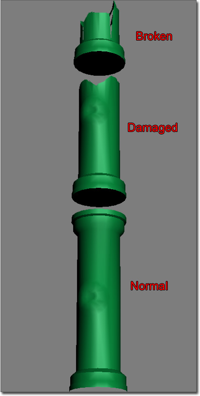
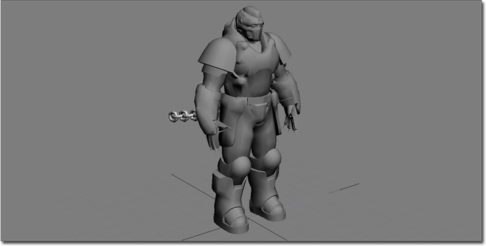
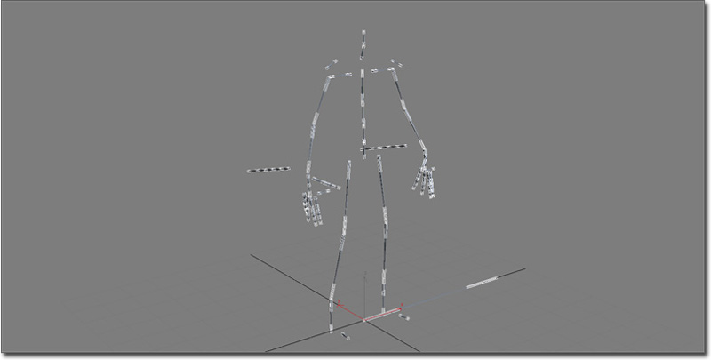
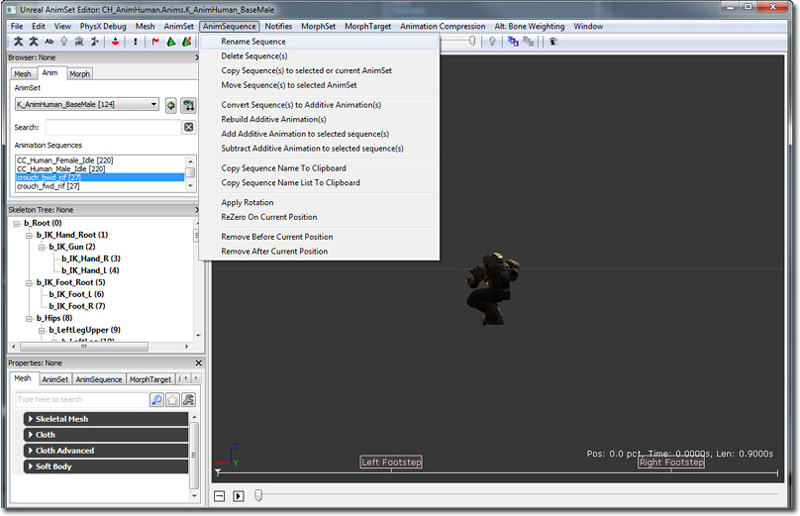
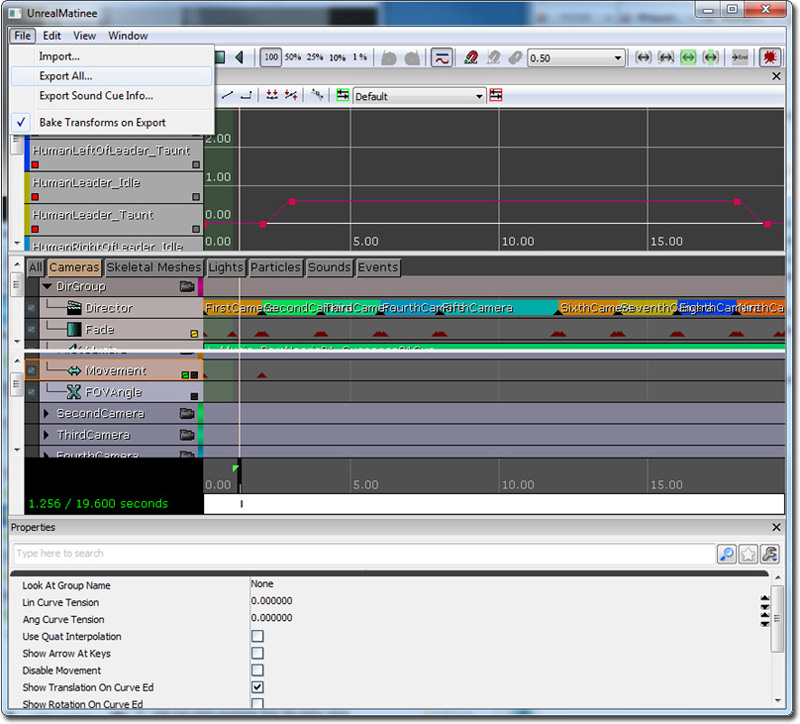
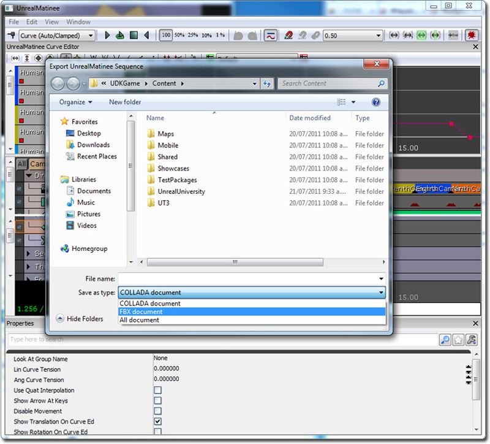

UDN
Search public documentation:
FBXBestPracticesKR
English Translation
日本語訳
中国翻译
Interested in the Unreal Engine?
Visit the Unreal Technology site.
Looking for jobs and company info?
Check out the Epic games site.
Questions about support via UDN?
Contact the UDN Staff
日本語訳
中国翻译
Interested in the Unreal Engine?
Visit the Unreal Technology site.
Looking for jobs and company info?
Check out the Epic games site.
Questions about support via UDN?
Contact the UDN Staff
UE3 홈 > FBX 콘텐츠 파이프라인 > FBX 우수 사례
FBX 우수 사례
문서 변경내역: Jeff Wilson 작성. 홍성진 번역.
개요
스태틱 메시 작업방식
- 3D 어플리케이션에서 FBX 파일로 메시를 익스포트합니다.
- 에픽의 아티스트가 익스포트할 때 흔히 사용하는 세팅은:
- Smoothing Groups (스무딩 그룹) 켜기
- Tangents and Binormals (탄젠트와 바이노멀) 켜기
- Preserve Edge Orientation (에지 방향 보존) 켜기
- 에픽의 아티스트가 익스포트할 때 흔히 사용하는 세팅은:
- 언리얼 에디터의 콘텐츠 브라우저를 사용해서 FBX 파일을 임포트합니다.

유용한 링크
스켈레탈 메시 작업방식
- 메시와 스켈레톤을 FBX 파일로 익스포트합니다.
- 익스포트할 (메시와 조인트 체인 루트같은) 것들을 선택한 다음 'export selected' 를 선택합니다.
- 에픽의 아티스트가 흔히 사용하는 익스포트 세팅은:
- Smooth Mesh (메시 부드럽게) 끄기
- Smoothing Groups (스무딩 그룹) 켜기
- 언리얼 에디터의 콘텐츠 브라우저를 사용하여 FBX 파일을 임포트합니다.
유용한 링크
애니메이션 작업방식
- 애니메이션을 FBX 파일로 익스포트합니다.
- 익스포트할 (조인트 체인 루트, 필요하다면 메시같은) 것들을 선택한 다음 'export selected' 를 선택합니다.
- 익스포트 세팅은:
- Animation (애니메이션) 켜기
- 언리얼 에디터의 애님세트 에디터에서 FBX 파일을 임포트합니다.
유용한 링크
모프 타겟 작업방식
- 모프 타겟(들)을 FBX 파일로 익스포트합니다.
- 익스포트할 (블렌드셰이프/모퍼 모디파이어 포함 메시같은) 것들을 선택하고 'export selected' 를 선택합니다.
- 익스포트 세팅은:
- Animation (애니메이션) 켜기
- Deformed Models/Deformations (디폼된 모델/디포메이션) - 모든 옵션 켜기
- 언리얼 에디터의 애님세트 에디터에서 FBX 파일을 임포트합니다.
유용한 링크
작명 규칙
- 스태틱 메시: SM_<패키지명>_<애셋명>_<인덱스>
- 스켈레탈 메시: SK_<패키지명>_<애셋명>_<인덱스>
씬 관리

스켈레톤이 묶인 메시인 깨끗한 "익스포트" 파일을 갖는 것이 쉽습니다. 이 메시는 익스포트에만 사용됩니다. 이 파일에서 릭이 만들어지나, 별도의 릭 파일로 저장됩니다.
별도의 릭 파일.
각 애니메이션은 보통 자체 파일에 저장되는데, 파일 시스템에 있는 다양한 애니메이션 관리를 간단히 하기 위해서입니다.언리얼 에디터에서 콘텐츠 이름바꾸기
 애니메이션의 경우 애님세트 뷰어에서 "애님 시퀸스" -> "시퀸스 이름바꾸기" 로 바꾸면 됩니다.
애니메이션의 경우 애님세트 뷰어에서 "애님 시퀸스" -> "시퀸스 이름바꾸기" 로 바꾸면 됩니다.

유용한 링크
전체 씬 FBX 익스포트/임포트

FBX 포맷을 선택하고 이름을 지은 다음 OK 를 누릅니다.
같은 마티네 창에서 FBX 데이터를 (리)임포트할 수 있습니다.